日案を書く・文例を使う・振り返る
その日のねらいと、1日の流れを書きます。日にちとクラスを選んでから始めます。
写真は架空のクラスの画面です。押すと大きく見られます。
1書きたい日とクラスを選ぶ
「指導計画」の「自園の帳票」で「日案」を押します。「日案カレンダー」で年・月・クラスを選び、「表示」を押します。
書きたい日付の中にあるクラス名を押します。「未作成」と出ていれば、その日の日案を書き始められます。
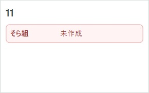
同じ日・クラスの日案がすでにあるときは、その日案を開いて「修正」を押します。
2文例を選んで、書きかけの日案に足す
自分で書くときは、下の「下書きの基本情報」へ進みます。
「日案例を検索」を押し、見たい活動名を押します。中身を読んで「この候補を下書きへコピー」を押します。
書きかけの日案には「この文例をどう使いますか？」と出ます。「文末に追加する」を押すと、今の年齢と書いた文章が残ります。文章は次の行に、活動は表のいちばん下に足されます。
文例の年齢・文章・活動に入れ替えるには「置き換える」を押します。元のまま書き続けるには「入力を続ける」を押します。
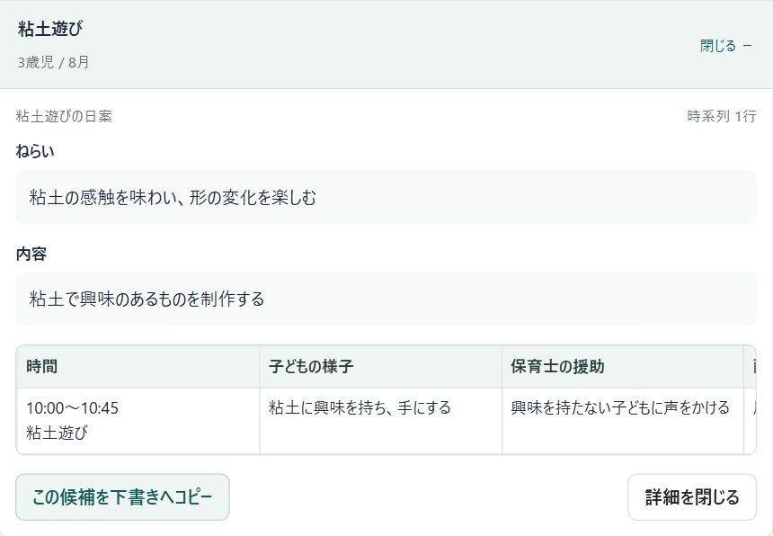
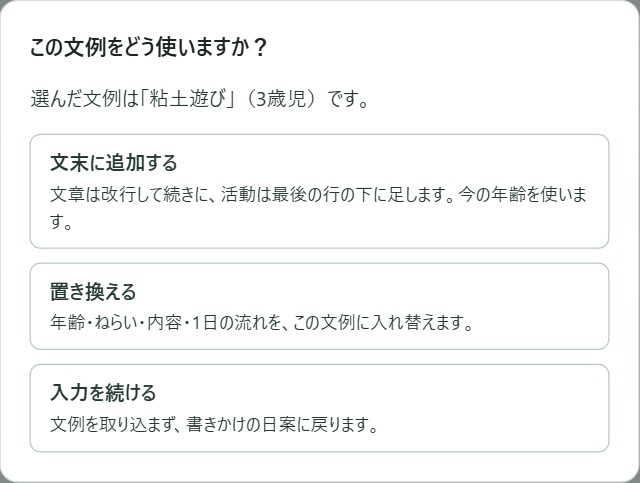
年齢・文章・活動がすべて空のときは、そのまま文例が入ります。内容を確かめ、最後に「下書きを保存」を押します。
3基本情報とねらいを書く
「下書きの基本情報」で対象日・クラス・年齢・作成者を確かめます。「ねらい」にはその日に大切にしたいことを、「内容」には予定している活動を書きます。
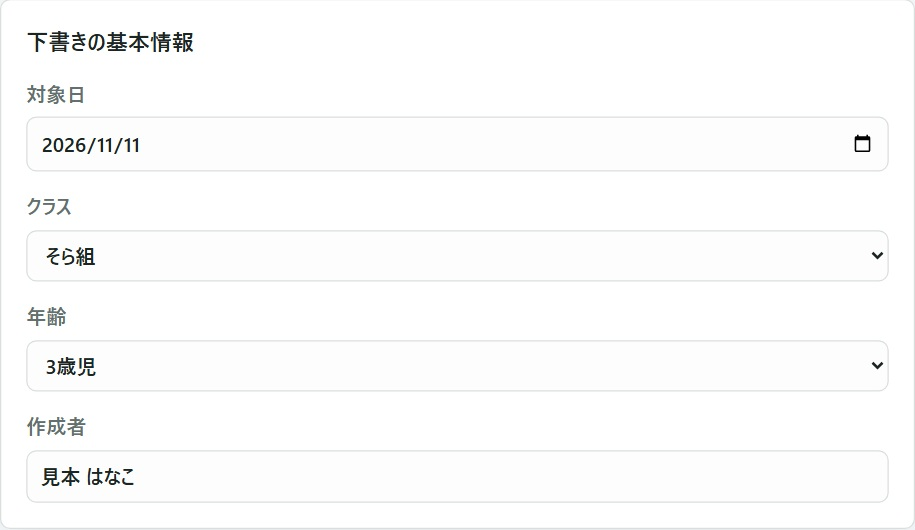
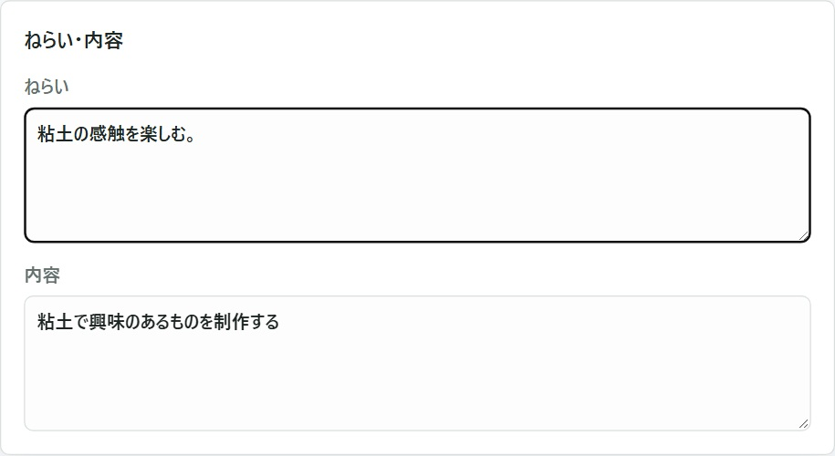
41日の流れを書く
「1日の流れ」に少なくとも1行書きます。左から「時間」「子どもの様子」「保育士の援助」「配慮事項」です。
続きの活動を書くときは「行を追加」を押します。途中に入れるときは「下に行を追加」を押します。
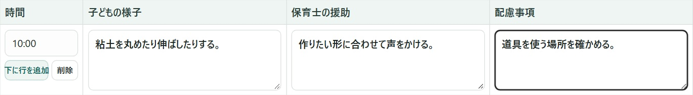
5保存して、書いた日案を確かめる
一番下の「下書きを保存」を押します。日付とクラスが入った日案が開き、「下書き」と出れば保存できています。
あとから書き足すときは、カレンダーで同じ日・クラスの日案を開き、「修正」を押します。書き終えたら「修正を保存」を押します。
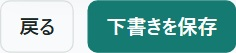
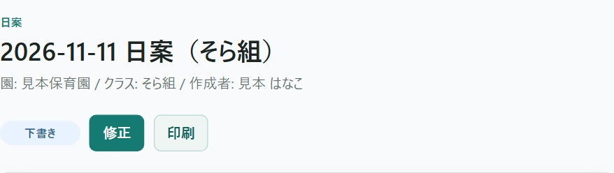
「入力を確認してください」と出たら、その下に書かれた欄を直します。対象日・年齢と、「1日の流れ」に入力があるかを見てから、もう一度保存します。
6その日の振り返りを書く
保存した日案を開き、「その日の振り返り」まで下に進みます。「振り返り」に、今日の子どもの様子や、次に試したいことを書きます。
入力すると自動で下書き保存されます。すぐに残したいときは「下書き保存」を押します。「振り返りの下書きを保存しました。」と出たら、ここで閉じても続きから書けます。
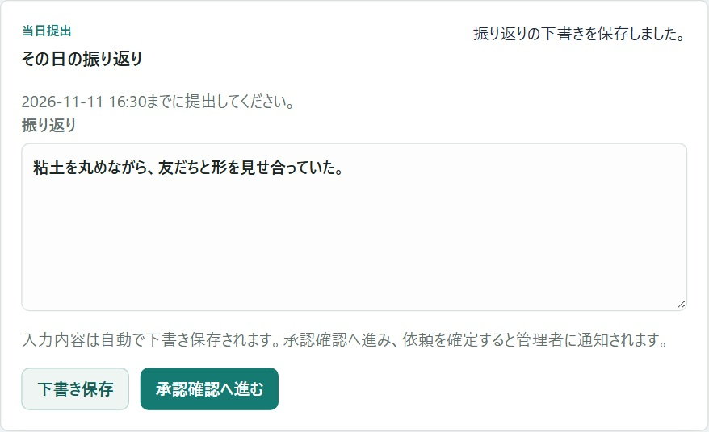
7振り返りを管理者に見てもらう
「承認確認へ進む」を押します。日付・クラス・文章を読み、直したいところがあれば「入力へ戻る」を押します。これでよければ「管理者へ承認を依頼」を押します。
「承認待ち」と出たら依頼は完了です。あとで確かめるときは、日案の「反省の承認状況を確認」を押します。自分が依頼した文章を承認前に直すときは、承認状況の画面で「依頼を取り下げる」を押します。
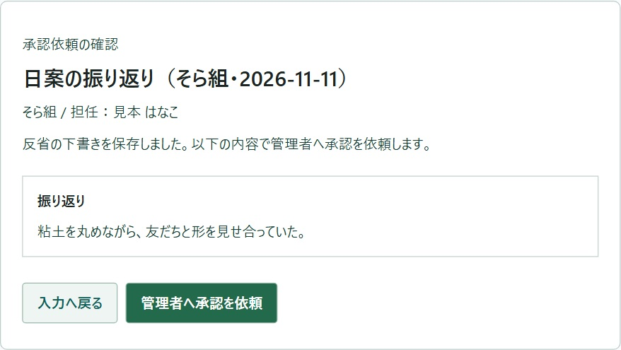
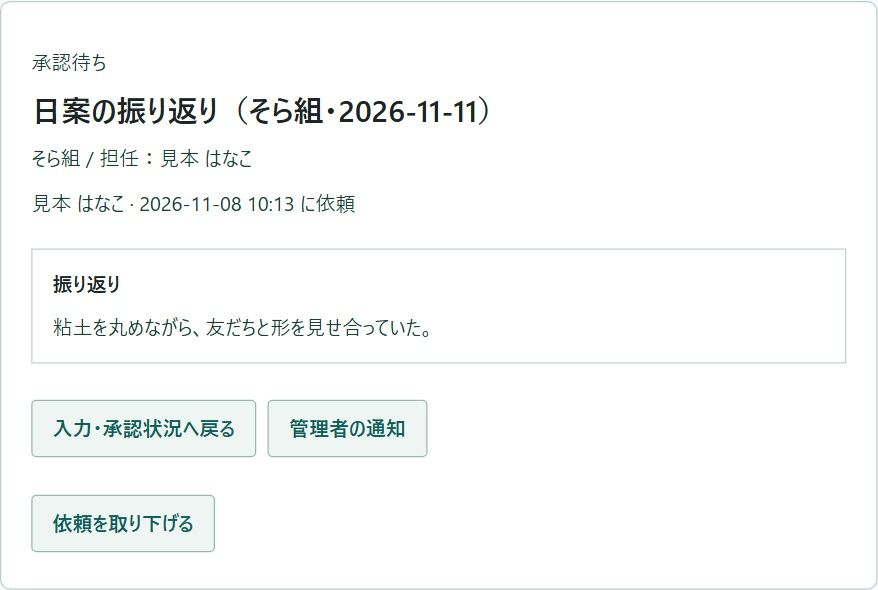